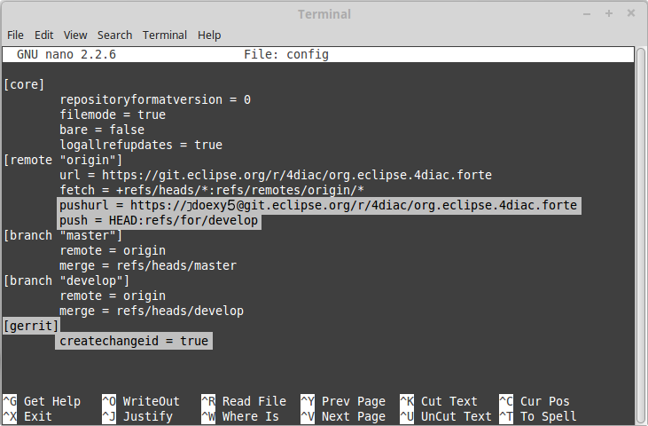
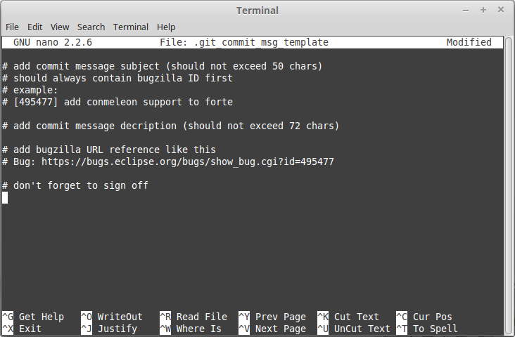

The Forte project is stored as a Git repository in the eclipse platform. It's open source, so you can download and you can even change things and improve it. But of course, it's not that simple, otherwise changes will be added without any control and could mess up with the code
If you don't know what Git is, don't worry, we have all been there. Basically Git is a distributed system that is used to control different versions of anything, but mostly of software code. The code is stored in what is called a repository which contains all the files related to the software. When a change is made, instead of saving new files (fileV1, fileV2, fileFinalVersion, fileThisIsReallyTheFinalVersion, fileThisIsReallyTheFinalVersion2) in a new folder, you just "commit" the change and the changes are saved in the repository. To go to older versions you go to the specific commit and see how the software was. The good thing about Git is the "distributed" word in its definition (I bet you didn't notice it). There's not only one repository, but anyone that wants to contribute to the repository, copies the whole content of the repository to his computer and works there, changes there and commits there. Then, he pushes to the repository where he copied from.
This is the basic of Git, but it should give an idea of how it works. In order to learn more about GIT, there are a lot of information on internet. But instead of starting from zero, I would recommend giving a look at https://git-scm.com/ where you can download everything you need to start contributing to any git project. I'll make it even easier and put the link to the documentation book of git, to start reading about it. Don't be afraid of the book, it's a big one, but you'll only need Chapters 1 and 2 to understand what's going on and play a little, and Chapter 3 to start contributing.
But I should warn you, young padawan, learning git is hard. It's a very powerfull tool, but it takes time to understand it. Read the basics and play a little. Don't waste time trying to understand everyting before jumping to contributing to other projects. The best teacher is the practice. Use Forte as your practice. You won't break anything. Git is bullet-proof.
You know how Git works, and have already used it. But now, a new player is in the game: Gerrit. What is it? The information in Wikipedia helps, but putting it simple, is the firewall of the contributions. It's used by many platforms, including the Eclipse Foundation where the Forte repository is. When someone, a programmer with the best of the intentions, wants to contribute to the Forte code, he clones the git repository, makes the changes, commits and then pushes to the repository in the Eclipse Foundation. But of course, the change doesn't go directly, but it has to be accepted by the responsibles of Forte. So, the contributors push to Gerrit. Gerrit makes some legal checks first, and then makes the Forte's responsible aware that some new change has arrived. They then go to Gerrit, see what's the new change, and accept or deny the change. Easy, right?
But to better understand Gerrit, it's better to work with it. We'll go step by step to push something to Gerrit to contribute to Forte.
As said, we'll go step by step to contribute to Forte. But let me tell you now. If you want to contribute you'll need to online-sign some legal documents. If you don't want to sign it, you can still get Forte's code and play with it.
First of all, you should create an Eclipse account and sign the CLA (Contributors License Agreement). This is mandatory in order to contribute to Forte. All commits that are not from Eclipse Accounts with signed CLA will be rejected automatically. If you don't want to contribute, and just want to download the code and play around, skip to the next step.
To create the Eclipse account, simply go to https://www.eclipse.org/ and click in "Create Account" on the top right section. Then, just fill the information to create an account. The email you use, will be the one that should be use in EGit.
The next thing is sign the CLA. Go to the CLA page to read it and learn more about that. The CLA is to protect copyrights and other legal stuff. Basically, when you sign it, you say that every change you contribute, is completely yours, and this helps protecting intellectual property, yours included. If your contribution is part of your work at some company, you should talk first with your superior and the legal deparment to fully understand how to approach this.
The signing is done online. You check boxes, and complete a textbox with "I AGREE". There's no tangible outcome. Eclipse stores your information together with the version of the CLA that you signed. You can print the CLA, but you won't get a certificate to print that says that you signed. Your account will show that you have signed the CLA and there's a tool in Eclipse to validate if an account has signed.
The first example uses Eclipse and all the git work will be done using EGit, normally already installed. If you think GUI is for weaks and a real programmer should use command line, you can follow the instructions given below. Nevertheless users who don't have command line experience should stick to Eclipse.
Prepare everything once
Get all the software
The first thing to do is to get all the software. Download Eclipse for C++ and install it. If you have already Eclipse but it's not configured for C++, you don't need to download another Eclipse, but you need to install the plugin for it. See a tutorial here. EGit should be there, if not follow the steps here to install it.
Configure EGit
The first thing to do in EGit is to configure the user settings. The main things are the name and email address. This information is attached to the commits you do. To do that, just follow the simple steps in section 6.2 of the same link as above. If you created the Eclipse account and signed the CLA as stated in the step before, you must use the the same email.
Download Forte repository
In Eclipse, go to File → Import...→ Git → Projects from Git. Click Next and then select Clone URI. Next. Paste https://git.eclipse.org/r/4diac/org.eclipse.4diac.forte in the URI field and then Next. Eclipse will connect to the repository and retrieve all the branches of it. Select all and click Next. Select the destination folder of the repository in your local machine and click Next. Wait while the repository is beeing downloaded. Click Next until is finished.
Look around and move between branches
Now, you have the newest code of Forte. The first thing to do when you download a project, is to look around. Check the folders, read the Documentation and readme files. Try to understand the folders and hierarchies.
Right Click on the project, and then Team and you find all the possible commands regarding EGit. Team → Show in History will show you all the commits in the current branch. Normally, master is the main branch. If Forte has another branch, and you want to work with it, you'll have to create a local branch that serves as reference of the original branch. That is, the Eclipse respository has a master branch (seen as origin/master), and for example a develop branch (seen as origin/develop). But you, locally, have only a master branch (seen as master). This local master is a reference to the origin/master and everything you change on it, will be then pushed to the origin/master. But if you want to work on the origin/develop branch, you'll need to create a local branch that references it.
Right click on the project → Team → Switch To → Other.... There you see the local and remote branches. Select the remote branch you want to work on, let's say origin/develop, and click Checkout. you'll get a message saying that you can watch the remote branch, or you can create a new branch locally to work on it. Click on Checkout as New Local Branch and then select a name for the local branch. The usual thing is to name the same as the original, so we'll call it develop (wihtout the "origin/" part) and finish. Now you can switch between the branches, and the changes in each one will be reflected in the corresponding origin.
The Forte projects follows the workflow shown here. Basically, the master branch is used to release versions and the develop for new stuff. You should always branch out from develop to work on something new.
Configure Gerrit
Access the Gerrit page in Eclipse to manage everything about Gerrit regarding your account. Click Sign In in the upper right corner and use the same email and password of your Eclipse account created in step 1.1. Once logged in, click on your name on the upper right corner, and then Settings. There you can change you preferences of messages, follow projects, manage password, among others. When you push something to Gerrit you can do it using ssh or https. SSH requires that you create the public and private keys, which are stored in files that Eclipse use then to connect to Gerrit. To know more about creating the keys and configuring in Eclipse, visit here, and then add the key in the SSH Public Keys setting in Gerrit. In this example we'll show the usage of https.
Go to HTTP Password in the Settings page of Gerrit, copy the username that appears and click Generate Password. you'll get a random long password that you'll use every time you want to push something to Gerrit. Go to Eclipse, right-click on the project → Team → Show in Repositories View. Then, expand Remotes, and right-click on origin → Gerrit Configuration.... In this step you can choose ssh, https or other as communication protocol. Choose https and paste your username from Gerrit in the field User. This will change the Push URI. In the Destination branch field, you should set the branch to push to. You can't push to a branch that doesn't exist in the Gerrit repository. Note that the destination branch begins with refs/for/. Click finish and see in the Repositories View that the Origin remote has changed the push URI. This means that when you send something to Forte, it will send to Gerrit, but when you get something from it, you'll get it from the actual repository.
Contributing
Find a bug to work on
The first thing to do to start contributing is to find a bug to work on. You can look into the code and find something wrong or you can go to the list of bugs and see the ones that refer to the Forte project. Every change that you do, should be related to a bug. If you find an error, or even missing documentation, you should report the bug. The bug's fixing is a metric that helps seeing how forward has a software come. But be aware that when reporting a bug, it should have a clear way of fixing it. Reporting a bug as "Missing documentation" brings difficulties to know where the work on the bug is done. Let's say we are working on bug number 123456.
Make the changes and prepare to commit
This is when you actually make the changes to the code. Open the files you want to change and simply make them. Try to make less than a 1000 changes for each commit in order to mantain the size of commits small.
Open the Git Staging View in Eclipse by going to Window → Show View → Other... → Git → Git Staging. In the Unstaged Changes you see all the files that were changed. Right-click on them and then Add to index. The selected files will be moved to Staged Changes.
Commit the changes
This is a very important step. The changes are going to be commited locally but the commit message is very important because Gerrit will check the commit first to see if everything is in order to accept it. The commit message will be written in the Git Staging View. The message has 3 parts: the subject, the body and the footer. The three parts are separated by an empty line.
The subject has to have the number of the bug you are working on between square brackets, followed by a short explanation of what was done in the commit. Try to keep it below 50 characters for better reading with the first letter capital. Don't use a period at the end of the subject.
The body contains all the explanation of what was done. Use it to explain what and why, not the how.
The footer must have 2 parts (3 if the Change-id is needed):
NOTE: Empty lines are only allowed (and mandatory) between the subject, body and footer, not between the inner parts of the footer.
NOTE 2: The Change-Id should be avoided the first time a change is being pushed to Gerrit (let's call it CommitOne). Gerrite will generate the Change-Id. If CommitOne is not accepted (wrong code, missing information, etc.), you must make the new changes and ammend (overwrite) the CommitOne wich will generate CommitTwo (you could also completeley delete CommitOne, and create a new commit as CommitTwo). Remember that CommitTwo is a completely new commit. CommitTwo must have the Change-Id that Gerrit generated (Go to Gerrit, find the change of CommitOne and you'll see the Change-Id). When you push CommitTwo, it won't create another entry in Gerrit, but it will appear below in the same page as CommitOne. Now CommitTwo is waiting to be accepted.
Example for CommitOne:
[123456] Change the initial value of temp variable
The initial value of the temp variable was changed to 1 instead of zero because of weather conditions
Bug: https://bugs.eclipse.org/bugs/show_bug.cgi?id=123456
Signed-off-by: John Doe <johndoe@gmail>
With the message done, click commit.
Example for CommitTwo:
[123456] Change the initial value of temp variable
The initial value of the temp variable was changed to 1 instead of zero because of weather conditions
Bug: https://bugs.eclipse.org/bugs/show_bug.cgi?id=123456
Change-Id: If0b359ad15268ed179194cf5ad4fb5b2d09b3290
Signed-off-by: John Doe <johndoe@gmail>
With the message done, click commit.
Push the commit
In the History View you can see the new commit you have just added. But the commit is locally, and no one else knows about it. It's time to push it to the repository in Eclipse. Right-click on your last commit → Push commit.... A dialog will open. With the showed configurations, you are trying to push to the develop branch of the Gerrit called refs/heads/develop. But according to the Gerrit documentation you should push to the magic refs/for/[branch] branch. So, in the Dialog, instead of the develop branch as it appear, you should change that to refs/for/develop (not reds/heads/develop). Click next, and you'll be asked to introduce your https Gerrit password generated in step 1.5. The push confirmation says that a new branch is beeing created. Don't worry about that, and click Finish. Put the password again, and the push should succeed. If something fails, the error appears in the log.
Use git on the command line instead of EGit (this one is for the reckless, the knights of the keyboard and especially those being afraid of mice)
The following instructions apply to Debian based Linux systems like LinuxMint or Ubuntu. It is asumed that you already created your Eclipse account and signed the CLA as described above. Also the same rules for creating a bug report and working on the forte code apply. Of course you can make your own decision which editor you want to use for the coding. There are a lot of possibilities out there, like VI, Emacs and many more. For code compilation and linking on a Linux system the GNU compiler suite usually is the best choice. But this is a different story, which will not be addressed here.
Check and install git command line tools
If you are not sure if the git command line tools are already installed on your Linux box, you can enter the following command on Debian based distributions (e.g. LinuxMint, Ubuntu).
johndoe@linuxmint ~/$ dpkg --get-selections | grep git
If git tools are already installed you should get a reply like this:
git install
git-core install
git-gui install
git-man install
git-review install
gitk install
If you don't see the output above, you'll need to install the git tools with the following command:
johndoe@linuxmint ~/$ sudo apt-get update && sudo apt-get install git
Clone forte repository into a directory of your choice
Create a directory in your own home directory first and change into it. In my example this is ⁄home⁄johndoe⁄develop⁄repos but you can also choose a different one.
johndoe@linuxmint ~/$ mkdir -p develop/repos
johndoe@linuxmint ~/$ cd develop/repos
Now it's time to clone the forte sources.
johndoe@linuxmint ~/develop/repos$ git clone https://git.eclipse.org/r/4diac/org.eclipse.4diac.forte
Cloning into 'org.eclipse.4diac.forte'...
remote: Counting objects: 1, done
remote: Finding sources: 100% (1/1)
Receiving objects: 100% (2283/2283), 1.27 MiB | 458.00 KiB/s, done.
remote: Total 2283 (delta 0), reused 2283 (delta 0)
Resolving deltas: 100% (1445/1445), done.
Checking connectivity... done.
After the cloning is finished, you can have a look at the branches of the repository, but first you'll have to change into the new automatically created forte source directory.
johndoe@linuxmint ~/develop/repos$ cd org.eclipse.4diac.forte
johndoe@linuxmint ~/develop/repos/org.eclipse.4diac.forte $ git branch -a
* master
remotes/origin/1.8.x
remotes/origin/HEAD → origin/master
remotes/origin/OPC_UA
remotes/origin/develop
remotes/origin/master
The "*" indicates the current active branch. Now switch to the "develop" branch, because this is the one, where the commits are supposed to go.
johndoe@linuxmint ~/develop/repos/org.eclipse.4diac.forte $ git checkout develop
Branch develop set up to track remote branch develop from origin.
Switched to a new branch 'develop'
Configure your git installation to work with Gerrit code review
You should have already created your Eclipse account and Gerrit login, following the description above. Let's assume that your email account is john.doe@example.com and the login for Gerrit is jdoexy5. We'll set this in the git configuration first.
johndoe@linuxmint ~/develop/repos/org.eclipse.4diac.forte $ git config --global user.email "john.doe@example.com"
johndoe@linuxmint ~/develop/repos/org.eclipse.4diac.forte $ git config --global user.name "jdoexy5"
Please note that git config –-global settings normally are stored within an user specific configuration file. This file is named .gitconfig and is stored in your own home directory and not in the forte repository. We'll now create an SSH public key, which you need to upload to your Gerrit account later on.
johndoe@linuxmint ~/develop/repos/org.eclipse.4diac.forte $ cd ~/.ssh
johndoe@linuxmint ~/.ssh $ ssh-keygen -t rsa -C "john.doe@example.com"
Generating public/private rsa key pair.
Enter file in which to save the key (/home/johndoe/.ssh/id_rsa):
Enter passphrase (empty for no passphrase):
Enter same passphrase again:
Your identification has been saved in /home/johndoe/.ssh/id_rsa.
Your public key has been saved in /home/johndoe/.ssh/id_rsa.pub.
The key fingerprint is:
4d:c7:4f:8f:71:07:89:cb:c9:dc:e5:ad:54:77:9a:64 john.doe@example.com
You can just accept the default key file location by hitting the return key.The Eclipse foundation strongly recommends to use a passphrase for additional security.Now copy the newly created public SSH key to your Gerrit account at eclipse.org. Display the contents of the public key file with the following command
johndoe@linuxmint ~/.ssh $ cat id_rsa.pub
Copy everything displayed into your clipboard from the start (including ssh-rsa) to the end (including john.doe@example.com). Now login to your Gerrit account at eclipse.org, click on the small arrow next to your user name displayed in the top right corner and choose "Settings". In the menu on the left choose "SSH Public Keys" and click on "Add key…". Now paste everything from the clipboard into the text field and click "Add". Your public key should appear in the list now. We'll check now, if Gerrit is accepting your key properly. Let's do a little ssh login test.
johndoe@linuxmint ~/.ssh $ ssh -p 29418 jdoexy5@git.eclipse.org
The authenticity of host '[git.eclipse.org]:29418 ([198.41.30.196]:29418)' can't be established.
RSA key fingerprint is 1a:b6:dc:be:0e:1f:ab:01:70:aa:43:82:4d:54:51:37.
Are you sure you want to continue connecting (yes/no)? yes
Warning: Permanently added '[git.eclipse.org]:29418,[198.41.30.196]:29418' (RSA) to the list of known hosts.
**** Welcome to Gerrit Code Review ****
Hi John, you have successfully connected over SSH.
Unfortunately, interactive shells are disabled.
To clone a hosted Git repository, use:
git clone ssh://jdoexy5@git.eclipse.org:29418/REPOSITORY_NAME.git
Connection to git.eclipse.org closed.
You'll have to configure the Gerrit Push URL within your git configuration. Change to the hidden git directory within the forte repository and edit the file named "config"
johndoe@linuxmint ~/.ssh $ cd ..
johndoe@linuxmint ~/ $ cd develop/repos/org.eclipse.4diac.forte/.git
johndoe@linuxmint ~/develop/repos/org.eclipse.4diac.forte/.git $ nano config
The following screenshot indicates the parts you need to add or change. Save and exit afterwards.
Create your own commit message template (optional)
You can create a commit message template file, which will be used everytime you do a new commit. You can add helpful comments, that you don't forget important contents of the message or even add text, which should be part of every commit message. It's just up to you. Change to your home directory and create a new file called .git_commit_msg_template with your favorite text editor. Here I used nano for convenience.
johndoe@linuxmint ~/develop/repos/org.eclipse.4diac.forte/.git $ cd /home/johndoe
johndoe@linuxmint ~/ $ nano .git_commit_msg_template
The following screenshot shows some example content. See above for more details of the message guide
Do your first command line commit
A new commit should always be in relation to a bug in Bugzilla as already mentioned above. A bug can also add new functionality to forte as well. A single commit should not contain more than 1000 lines of code (yes, you are right, this was already mentioned above, but you can never overaddress this). A good approach to check if something was changed in your local forte sources and needs to be committed is the git status command. You should change into your local forte git repository first.
johndoe@linuxmint ~/develop/repos/org.eclipse.4diac.forte $ git status
On branch develop
Your branch is up-to-date with 'origin/develop'.
Untracked files:
(use "git add file..." to include in what will be committed)
src/modules/conmeleon_c1/
nothing added to commit but untracked files present (use "git add" to track)
In the example above I just added an empty directory, which is now recognised by git as untracked. If you want to add some new files, just copy them to your local forte repository or edit existing files. Git will recognise the changes and you'll see the files with the "git status" command. To be able to commit anything, the respective files need to be added first. In this way the files will be moved to the so called staging area. So felx your fingers and do a propper adding.
johndoe@linuxmint ~/develop/repos/org.eclipse.4diac.forte $ git add src/modules/conmeleon_c1/util
johndoe@linuxmint ~/develop/repos/org.eclipse.4diac.forte $ git status
On branch develop
Your branch is up-to-date with 'origin/develop'.
Changes to be committed:
(use "git reset HEAD file..." to unstage)
new file: src/modules/conmeleon_c1/util/fileres.cpp
new file: src/modules/conmeleon_c1/util/fileres.h
new file: src/modules/conmeleon_c1/util/uncopyable.h
Untracked files:
(use "git add file..." to include in what will be committed)
src/modules/conmeleon_c1/CMakeLists.txt
src/modules/conmeleon_c1/gpio/
src/modules/conmeleon_c1/processinterface.cpp
src/modules/conmeleon_c1/processinterface.h
src/modules/conmeleon_c1/spi/
Now we do the commit itself. Don't forget the -s option for automatic sign off which is required by the org.eclipse.4diac.forte project and to follow the message guide if you didn't do it already as a template. After the git commit command the default editor will be opened with your commit message template and you have to enter the message information (Bugzilla ID, what was changed and why and the URL to the bugzilla entry).
johndoe@linuxmint ~/develop/repos/org.eclipse.4diac.forte $ git commit -s
[develop 3a8de79] [495477] Add conmeleon support to forte
3 files changed, 272 insertions(+)
create mode 100644 src/modules/conmeleon_c1/util/fileres.cpp
create mode 100644 src/modules/conmeleon_c1/util/fileres.h
create mode 100644 src/modules/conmeleon_c1/util/uncopyable.h
So far so good. This was not really a big deal, was it? The next step is pushing to Gerrit code review and then your new code will be scrutinised by the never sleeping eyes of the project code reviewer.
Push to Gerrit
This is not difficult, if you followed the steps above. You are just a single command away from finish.
johndoe@linuxmint ~/develop/repos/org.eclipse.4diac.forte $ git push origin HEAD:refs/for/develop
Password for 'https://jdoexy5@git.eclipse.org':
Counting objects: 38, done.
Delta compression using up to 2 threads.
Compressing objects: 100% (8/8), done.
Writing objects: 100% (9/9), 3.84 KiB | 0 bytes/s, done.
Total 9 (delta 3), reused 0 (delta 0)
remote: Resolving deltas: 100% (3/3)
remote: Processing changes: new: 1, refs: 1, done
remote: ----------
remote: Reviewing commit: 3a8de79f
remote: Authored by: jdoexy5 (john.doe@example.com)
remote:
remote: The author is not a committer on the project.
remote: The author has a current Contributor License Agreement (CLA) on file.
remote: The author has "signed-off" on the contribution.
remote:
remote: This commit passes Eclipse validation.
remote:
remote: New Changes:
remote: https://git.eclipse.org/r/74832 [495477] Add conmeleon support to forte
remote:
To https://jdoexy5@git.eclipse.org/r/4diac/org.eclipse.4diac.forte
* [new branch] HEAD → refs/for/develop
You have done it, good job! Now it's the reviewers turn and you'll see his or her comments in the Gerrit code review webpage.
When creating new files to be added to the project, the copyright terms should be at the beggining. You should add the year of the modification to the file in the first line of the term, and at the end of the term, your name below Contributors, with a little explanation of your contribution to the file.
Always contribute to a bug.
Put the bug number between brackets in the subject of the commit message, and the link to the bug in the footer.
Don't forget to sign the commit.
Use the Gerrit website to see the commits you pushed and the status of them.
Don't be afraid to contribute things.
Use the forums in case of doubt.
Find more info here.
Go back to Development index:
If you want to go back to the Start Here page, we leave you here a fast access
Or Go to top